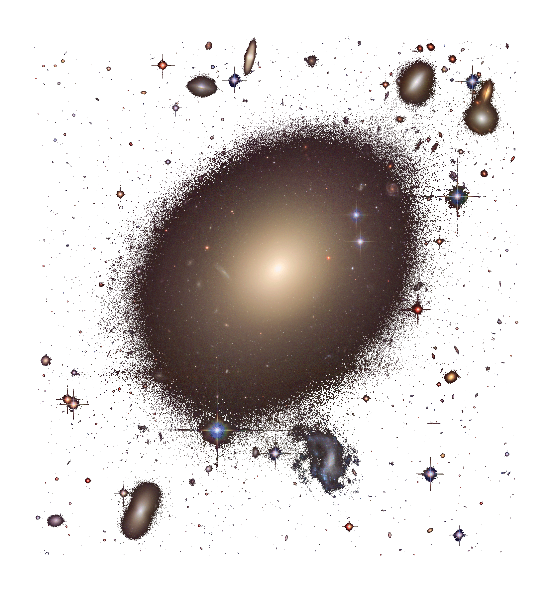
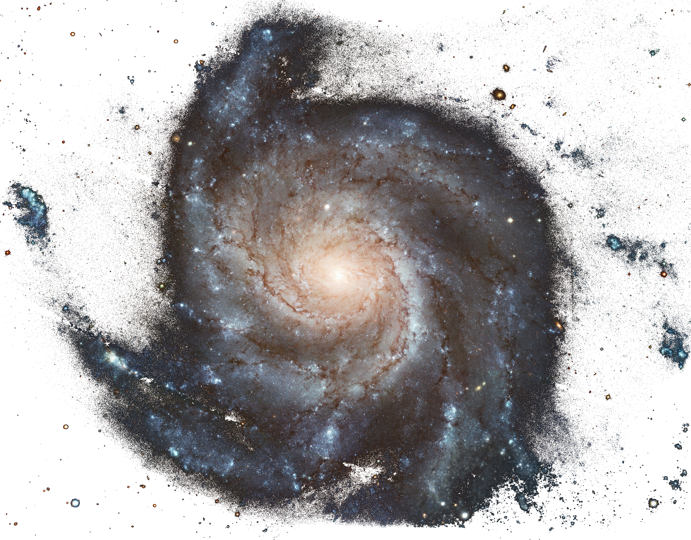

Types
of
Galaxies
Galaxies come in three main types: ellipticals, spirals, and irregulars. A slightly more extensive description of galaxy types based on their appearance is given by the Hubble sequence (see diagram below). Since the Hubble sequence is entirely based upon visual morphological type (shape), it may miss certain important characteristics of galaxies such as star formation rate in starburst galaxies and activity in the cores of active galaxies.
1. ellipticals
The Hubble classification system rates elliptical galaxies on the basis of their ellipticity, ranging from E0, being nearly spherical, up to E7, which is highly elongated. These galaxies have an ellipsoidal profile, giving them an elliptical appearance regardless of the viewing angle. Their appearance shows little structure and they typically have relatively little interstellar matter. Consequently, these galaxies also have a low portion of open clusters and a reduced rate of new star formation. Instead they are dominated by generally older, more evolved stars that are orbiting the common center of gravity in random directions. The stars contain low abundances of heavy elements because star formation ceases after the initial burst. In this sense they have some similarity to the much smaller globular clusters.
2. Spirals
Spiral galaxies resemble spiraling pinwheels. Though the stars and other visible material contained in such a galaxy lie mostly on a plane, the majority of mass in spiral galaxies exists in a roughly spherical halo of dark matter which extends beyond the visible component, as demonstrated by the universal rotation curve concept.
3. irregulars
An irregular galaxy is a galaxy that does not have a distinct regular shape, unlike a spiral or an elliptical galaxy. Irregular galaxies do not fall into any of the regular classes of the Hubble sequence, and they are often chaotic in appearance, with neither a nuclear bulge nor any trace of spiral arm structure.